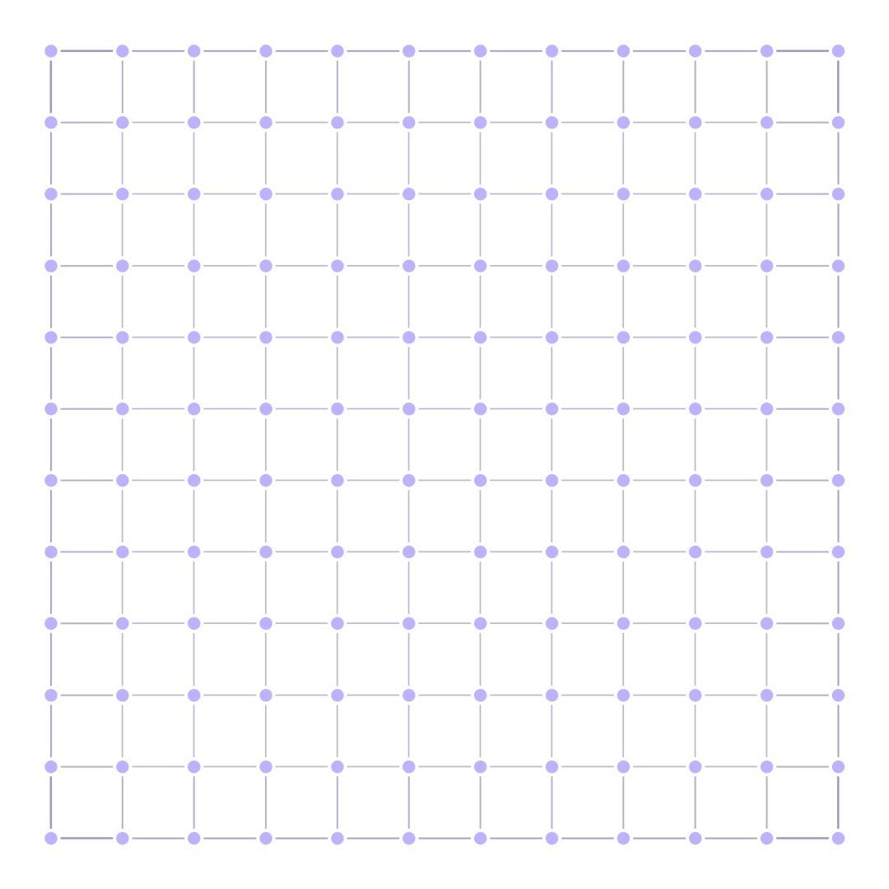
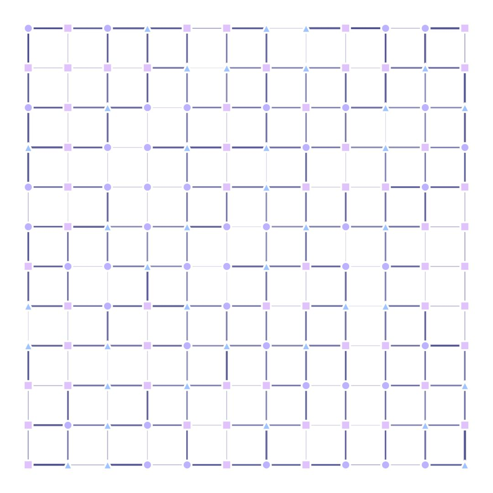
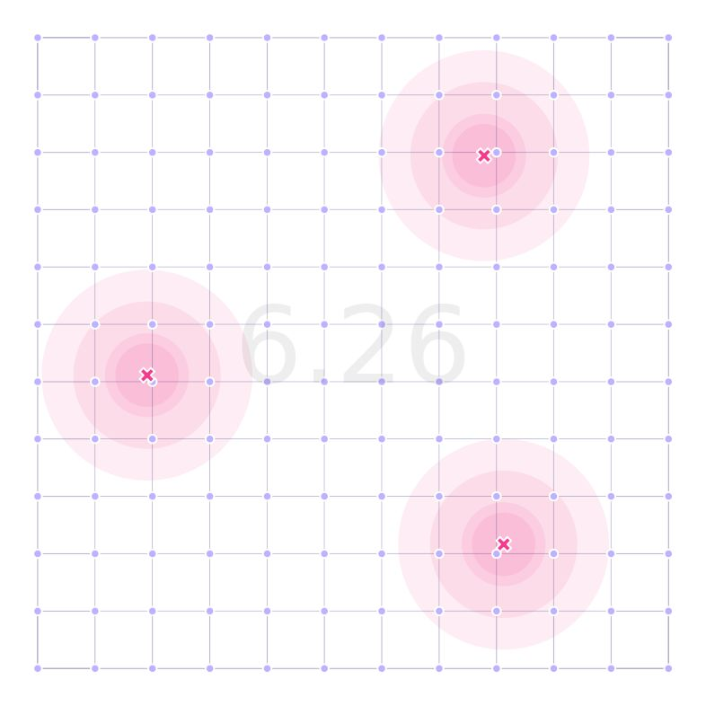
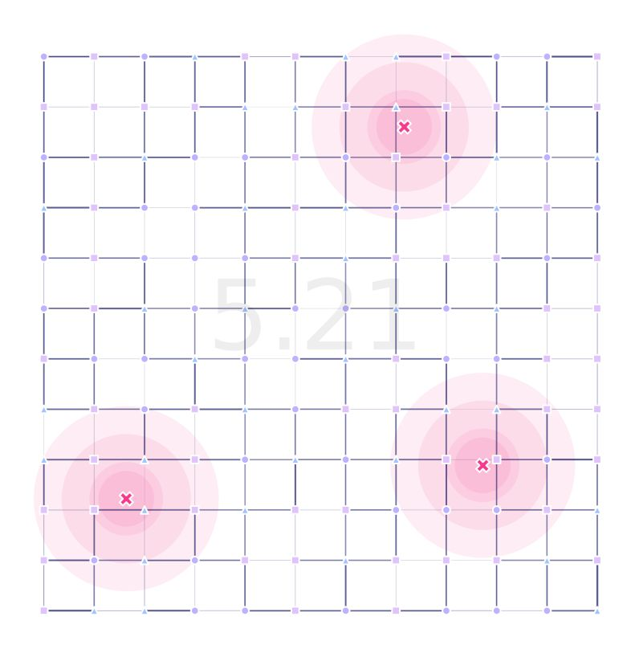

7. GA Custom with Multi-Point Type
Another feature of MGSurvE is that it can handle multiple point-types (as we saw in our sites and trap types tutorial).
In this tutorial, we are going to optimize over a regular landscape with heterogeneous point-types.
7.1. Setting Landscape Up
As we mentioned, we are going to use a regular grid for this landscape. We define it by running:
bside = math.sqrt(PTS_NUM)*11.25
bbox = ((-bside, bside), (-bside, bside))
xy = srv.ptsRegularGrid(int(math.sqrt(PTS_NUM)), bbox).T
pType = np.random.choice(PTS_TYPE, xy.shape[1])
points = pd.DataFrame({'x': xy[0], 'y': xy[1], 't': pType})
Where we assign a random point-type in the pType variable.
With out point-types setup, we can define the masking matrix.
This matrix is responsible for defining the probabilities of individuals moving from one point-type to another:
msk = [
[0.100, 0.700, 0.200],
[0.100, 0.100, 0.800],
[0.750, 0.125, 0.125],
]
This means that from point-type 1, we have a set of 10%-70%-20% probabilities of landing in a point-type 1, 2, and 3 respectively. The second row encodes the probabilities of landing in point-type 1, 2, and 3 respectively (starting from point-type 2); and so forth.
Now, with this and our traps, we are ready to setup our landscape as we usually do. The only difference being that we add our msk to the landscape generation:
lnd = srv.Landscape(
points, maskingMatrix=msk, traps=traps, trapsKernels=tker
)
We can see the difference between a homogeneous and heterogeneous version of the landscape in the following images:
 {kind=link}
{kind=link}
7.2. Optimization and Results
Now, the optimization part of the algorithm remains the same as in our previous examples.
Our results after running the algorithm for 500 generations are:
 {kind=link}
{kind=link}
where we can see the impact of encoding the point-type information into the landscape for optimization.
The full code for this demo can be found here with the simplified version stored in this link.